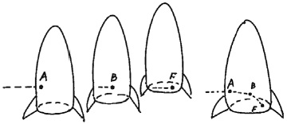

Profesör Einstein, en büyük başarınız olarak neyi görüyorsunuz?
Genel izafiyet kuramımı, yani özel kuramın bütün hareketleri içerecek şekilde genelleştirilmesini. Bu bir dünya sistemidir.
Hangi açıdan özel kuramın genelleştirilmesidir?
Özel kuramı ele aldığınızda kendi alanının ötesindeki yerleri hedeflediğini görürsünüz. Neden doğa yasaları sadece düzgün (sabit hızlı) hareket durumunda değişmeden kalsın ki? Evrenin yasaları hareketin türünden tamamen bağımsız olmalı. Özel kuramı geliştirdikten sonra bu işe giriştim, onu genelleştirerek ivmeli hareketi de içine kattım.
Özel kuramda ivmeli hareket neden yoktu?
Özel kuram düzgün hareket saptanamaz ilkesine dayanır, dışarıdaki bir referans noktasını esas almadan düzgün hareketin farkına varamazsınız. Oysa ivmeli hareketi saptayabilirsiniz. Örneğin, dışarıda bir referans noktası aramaya gerek duymadan treninizin hareket etmeye başladığını, döndüğünü veya durduğunu derhal bilebilirsiniz. Dolayısıyla ivmeli hareket izafi değildir ve özel kurama dahil olamaz. Özel kuramın, ivmeli hareketi de içerecek şekilde genişletilmesi çok zor oldu. Nereden başlayacağımı bilmiyordum.
Zorluğu anlamaya başladım. İvmeli hareketin izafiyete katılması gerekiyordu, ama izafi olmadığı için katılamazdı. Peki bu çıkmazı nasıl çözdünüz?
Belli koşullarda saptanamaz olarak kalan diğer bir özellik bulmalıydım. Bunu yapmak için epey bir motivasyonum vardı, çünkü ivmeli hareketi dahil ederek izafiyetin genişletilmesi otomatik olarak yerçekimini de içerecekti, zira yerçekimi etkisindeki hareket ivmeli bir harekettir. 1907 yılında özel kuram üzerine kapsamlı bir makale hazırlarken, bir evin çatısından düşen birinin kendi ağırlığını, yani yerçekimini hissetmeyeceği fikri aniden aklıma geldi. Hayatımın en hayırlı fikriydi bu, zira yerçekiminin de izafi olduğunu ve gözlemcinin hareket durumuna bağlı olduğunu anlamamı sağladı. Bu düşünce beni genel kurama götürdü.
Yerçekiminin nasıl izafi olduğunu anlıyorum, çünkü sizin de açıkladığınız gibi yerçekimi, yerde duran biri için vardır, yere düşen biri için değil. Saptanamaz olarak kalan özellik yerçekimi mi?
Sadece yerçekimi değil, genel olarak ivme. Size bir örnek vereceğim. Bir grup bilimci bir g ivmesiyle sürekli hızlanan bir uzay gemisinin içinde bulunan penceresiz bir laboratuvarda çalışıyor. Bu gemideki bilimciler ağırlıksız değildir, çünkü yerçekimi kuvvetine benzer bir kuvvetle zemine doğru çekildiklerini hissederler. Eğer bilimcilerden biri bir iki nesneyi bıraksa bu nesneler onların istikametinde hızlanan laboratuvar zeminine çarpana kadar boşlukta yüzerler. Gemiyle hareket eden bilimcilerin referans düzleminden bakıldığında bu nesneler laboratuvarın zeminine tastamam bir g ivmesiyle hızlanarak düşerler, sanki laboratuvar yeryüzündeymiş gibi. Bilimciler ise kendileri bir g ivmesiyle hala hızlanıyorlar mı, yoksa yeryüzüne mi indiler, bunu anlayamazlardı. Her iki durumda da fizik yasaları aynıdır. İvme ve yerçekiminin etkileri aynı olgudur.
Fakat uzay gemisi sözgelimi 1/3 g ivmesiyle hareket etseydi ivmeyi fark edemez miydiniz? O zaman dünyada olmadığınızı bilirdiniz, değil mi?
Evet, ama o zaman da ivmeyi 1/3 g değerinde olan Mars’ın ivmesinden ayırt edemezdiniz. Kütleçekiminden kaynaklanan ivme, yakın olduğunuz göksel cismin kütlesine bağlıdır.
Şimdi anlıyorum, Profesör. Önemli olan yersel çekim değil, herhangi bir göksel cismin yakınındaki kütleçekiminden kaynaklanan ivmedir.
Evet, uzay gemisinin ivmesinin herhangi bir değeri belli bir cisme doğru kütleçekimsel ivmeden ayırt edilemezdi. Bu görüş beni genel izafiyet kuramına giden yola soktu. Ama yol beklediğimden daha çetindi, çünkü uzayın düz olduğu Öklid geometrisinden uzayın eğri olduğu yeni bir geometriye geçmemi gerektiriyordu. Uzayın eğri olması ışığın bir kütleçekimi alanından eğrilerek geçtiğini ifade ediyordu. İnsanın bu olguyu gözlemleyebilmesi için güçlü bir kütleçekimi alanına ihtiyacı vardır, tıpkı güneşin oluşturduğu gibi. Bu sağlansa bile söz konusu olgunun saptanması çok hassas araçları gerektirir.
Uzay eğrisi kuramda nasıl ortaya çıktı?
Kütleçekimiyle ivmenin eşitliği sizi ona götürür. Hızlanarak giden uzay gemimizdeki laboratuvara dönecek olursak, eğer bilimciler geminin bir yanındaki küçük bir delikten yatay eksende gelen bir ışık ışınının yolunu gözlemleseler, eğri bir yol görürler. Bu yolu sizin için şu zarfın arkasına çizeyim.

Zihninizde durumu daha kolay canlandırmak için küçük bir göktaşının hızlanan uzay gemisinin içine girdiğini hayal edin. Göktaşı ilk olarak A noktasından içeri girdiğinde uzay gemisi belirli bir konumdadır. Kısa süre sonra göktaşı ufak bir mesafe katederek B noktasına geldiğinde gemi bu noktadan uzaklaşmış olur, ama göktaşı baştaki yoluna devam eder. Göktaşının perspektifinden bakıldığında uzay gemisi kendi istikametinde yoluna devam ederken, laboratuvarın zemini de onunla birlikte ilerler. Zeminde duran bilimcilerin perspektifinden bakıldığında göktaşının yolu bükülür ve şu F noktasında zemine çarpar. Aynı şey ışık ışını için de geçerlidir; bilimciler ışık ışınının yolunu bükülmüş ve zemine çarpmış olarak görürler. İvme ile kütleçekimi aynı olduğundan, kütleçekimi alanının da bir ışık ışınının yolunu bükebileceği sonucuna varabiliriz.
Çiziminiz konuyu anlamama yardım etti. O halde ışığın büküleceği tahmini doğrulandı mı?
Evet, 1919 tarihinde Britanyalıların gerçekleştirdiği astronomi keşfi tarafından doğrulandı. Bu ölçümü yapmak hiç kolay değildir, çünkü dünyanın kütleçekimi alanına yakın uzay eğrisi son derece küçüktür. Fakat güneşin kütleçekim alanı bir eğrinin prensipte ölçülebilmesine olanak tanır. Güneşin yanından sıyırma açısıyla geçen bir yıldızdan yayılan ışık ışınlarının küçük sapmasını hesaplamıştım. Yıldızın ışığı güneş tutulması sırasında gözlemlenebileceğinden, Arthur Eddington ölçümler için 1919 yılındaki güneş tutulması sırasında Batı Afrika’ya gitti. Hesaplarının benimkilerle tamamen örtüşmesiyle, tahminlerimin doğru çıktığı kanıtlanmış oldu.
Buluşunuz doğa yasalarının nasıl tasarlandığını gösterdi. Eğer sonuçlar farklı çıksaydı ve kuramınızın yanlış olduğu kanıtlansaydı ne derdiniz?
O zaman sevgili Tanrı için üzülürdüm. Kuram doğru.